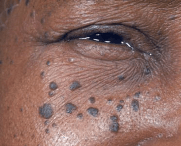
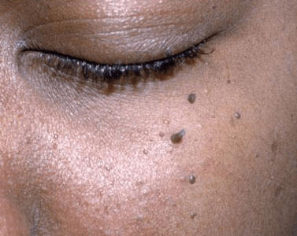

What is Dermatosis Papulosa Nigra(DPN)?
Dermatosis papulosa nigra is a harmless condition commonly affecting the faces of
black and sometimes Asian adults. The cause of dermatosis papulosa nigra is unknown,
although about half of people affected have a family history of the disease.
Dermatosis Papulosa Nigra (also known as DPN) is characterized by small brown or black spots
that are on the skin around the cheekbones and eyes. The dark spots may also be found on other
areas of the face, neck, chest, and back. Some people with dermatosis papulosa nigra have a
few, isolated spots while others have hundreds of spots. The spots may be flat or hang off the skin
like a skin tag.
The spots are neither cancerous nor medically concerning, but they may be itchy, irritating, or
cosmetically undesired. They are often referred to as ‘moles’ but they are not true moles by
definition.
This condition occurs most frequently in blacks and dark-skinned Asians, and less frequently in
other races. Fair-skinned blacks are less likely to develop dermatosis papulosa nigra than dark-
skinned blacks. Women are more likely to develop this condition than men. The spots generally
appear after puberty and grow in size and number with age.

The cause of dermatosis papulosa nigra is unknown.

The appearance and distribution of dermatosis papulosa nigra allow a dermatologist to easily
recognize the condition by clinical examination. Rarely, a dermatologist may perform a biopsy, a
procedure in which a small skin sample is taken from the affected area and looked at under a
microscope to confirm the diagnosis.
Dermatosis papulosa nigra affects up to 35% of people of African descent and an unknown
proportion of Asian individuals. Women are affected more than men. Dermatosis papulosa
nigra usually begins in adolescence, and the number and size of lesions increase with age.
The spots of dermatosis papulosa nigra do not go away.
Numerous 1–5 mm firm, smooth, raised, dark brown to black bumps occur on the cheeks and forehead.
Sometimes these bumps may also be on the neck and trunk.
No treatment is needed for dermatosis papulosa nigra lesions unless they are bothersome cosmetically.
When removal of dermatosis papulosa nigra lesions is sought, care must be taken
to be conservative to avoid scars and loss of pigment in the skin.
Treatment cost is usually not covered by insurance.
Although dermatosis papulosa nigra is not a dangerous condition, some patients choose to have
the spots removed for cosmetic reasons. The condition generally worsens with age, and the size
and number of spots do not decrease without treatment.
People who are considering treatment for dermatosis papulosa nigra should carefully consider
their expectations and goals of treatment. Because treatment may not be able to completely
remove spots, the goal of treatment should be to minimize the appearance of spots rather than to
remove them completely.
Treatment for dermatosis papulosa nigra is complicated by the fact that the condition occurs
mostly in skin of color patients, who are at a higher risk of developing pigmentation defects
(lightening or darkening of the skin) and scarring following treatment. The resultant blotchy or
scarred appearance of the skin may be as cosmetically undesired as the original dermatosis
papulosa nigra spots.
Treatment options for dermatosis papulosa nigra include scissor excision, shave excision,
cryosurgery, electrodessication, curettage, dermabrasion, and laser removal. The cost of treatment
depends on the type of treatment and on the size of the area to be treated. Since treatment is
usually performed for cosmetic reasons, removal of these benign lesions is not covered by
insurance and is an out-of-pocket expense. The type of treatment that is best for dermatosis
papulosa nigra depends on the individual patient. For example, a physician may prefer different
treatments for patients with a small number of spots versus patients with many spots. Special care
must be taken when treating skin of color patients with dermatosis papulosa nigra because of the
increased likelihood of developing scarring and coloration problems.
In conclusion, there are many treatment options for dermatosa papulosa nigra, but some carry a
higher risk of causing scar formation and pigmentation changes in skin of color patients. Because
of this, skin of color patients who are considering treatment for dermatosa papulosa nigra should
consult a dermatologist who understands the unique properties and treatment outcomes of ethnic
skin.